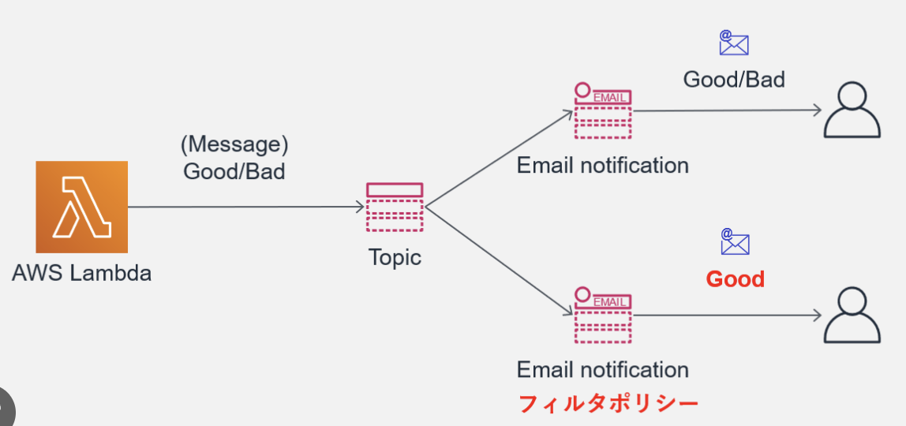

13. SNS¶
SNS(Simple Notification Service)は、マネージド型のメッセージ配信サービスで非同期なメッセージ配信を実現することができる
利用のイメージとしては、SNSのコンソール上でTopicの作成およびSub側の設定をして、Pub側でSNSのTopicを指定してあげる。

13.1. SNSの登場人物¶
Publisher：メッセージを配信する発行者
Subscriber：メッセージを受信する購買者
Topic：PubとSubを仲介して疎結合にする
13.2. Publisher¶
256キロバイトまでのメッセージをTopicに対して発行することができる。
S3のイベントやCodePipelineやLambdaなどと連携することができる。
13.3. Subscriber¶
事前に興味のあるTopicを購読設定しておくことで、メッセージが配信されるとSub側で受信することができる。
LambdaやSQS、Eメールなどが設定可能。 PubとしてCode PipelineをSubとしてEメールを設定しておけば、Deploy前にメールで承認依頼を出すといったことができる。
13.4. Topic¶
通信チャネルとして機能する論理的なエンドポイント
TopicにはスタンダートとFIFOの２種類が存在し、順序性、重複性、スループットの面でメリデメがある。
スタンダート
順序性と重複性が保証がされない代わりにほぼ無制限のスループットが実現できるFIFO
順序性と重複排除が保証されるが、スループットは300件/secとなる
13.4.1. 順序性¶
FIFOトピックではメッセージを発行時に、メッセージグループIDを発行する。
同一のメッセージグループでは配信順序が保証され。すべてのメッセージで配信順序を担保するためには一つのメッセージグループIDとすれば良い。
13.4.2. 重複排除¶
リトライなどで、同じメッセージが配信されてしまうことは銀行業務などでは許されないので、重複排除の機能を利用する。
基本思想としては、特定の重複排除IDを持つメッセージが発行されてから５分間は同一IDを持つメッセージ配信を行わないようにする。 SNSではコンテンツベースの重複削除が機能として提供されており、SNSのコンテンツをSHA-256で暗号化して重複IDとする。
13.4.3. リトライ¶
TopicからSubへのメッセージ配信が失敗した場合に、４段階のリトライポリシーに従ってリトライ処理がされる
即時再試行
バックオフ前段階
バックオフ段階
バックオフ後段階
バっクオフとは、配信が失敗した時に間隔を徐々に伸ばしながらリトライする手法。 すべてのリトライ処理が実行されても配信ができない場合は、メッセージが破棄されるが、SQSと組み合わせてデットレターキューに配信することも可能
13.4.4. セキュリティ¶
KMSによってTopic内のメッセージ（本文）を暗号化することができる。 ただし、Topic名などのメタデータは暗号化対象外であることに注意。
SNSはIAMによるアクセス制御に加えて、Topicに対して、独自のアクセスポリシーを付与することで、IAMと合わせてアクセス制御することができる。